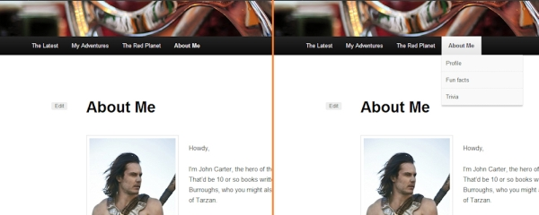
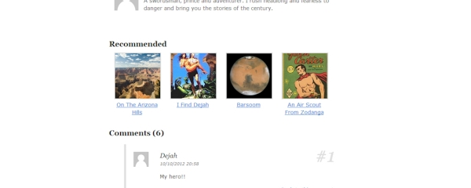
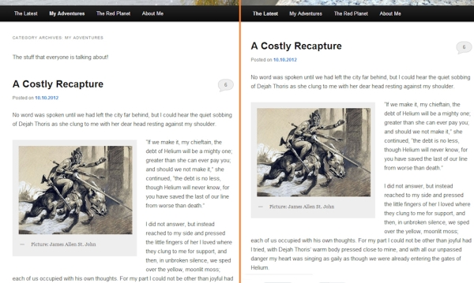

Wordpress, my way
Once I installed Wordpress for a first time, and didn't like what I saw: The default theme just didn't cut it. The desing seems alright at a glance, but when you take a closer look, it's easy to spot the not.
Attention reader: This article was written 2012 in comparison to twenty-eleven, the default theme at that time. Though some of the points have been fixed in later iterations, some still apply.
1 Menus
Location in the site hierarchy is indicated with a slightly bolder font on the menu item, which can be hard to detect. This can make it difficult to have a sense of location about your whereabouts, and to create correct mental model of sites hierarchy. Data displayed in a dropdown is only available by hovering over a menu item. This means it's not accessible with touch devices. There is no indicator for a submenu (like a small arrow), which can make it harder to discover items with a dropdown. 
My fix
Tabbed menu allows users to better locate themselves in the hierarcy of the site. Dropdown items are displayed on a single row below the currently selected tab, which makes it also accessible for touch devices.
2 Single article template
This is a deadend. Only way to discover new content is by using next/previous links or by tags, which are not very visible feature in the user interface. One can't see what's lying beneath these links, which can reduce the amount of new content found through an impulse. All in all there is no simple way of finding related content to current article, and no way to find it without further page loads.
My fix
Recommendations help users to find new articles suggested by their interests in a simple and effortless way. As this is an element with high contrast due to pictures, its more likely to catch ones eye. A solution like this can increase time single visitor spends on a website. 
3 Category-page
Category title and description do not stand out from other content. This is the only thing, which differentiates this view from the front page. Coupled with the problem with menu poorly indicating your location, it's easy to get confused about your whereabouts in the hierarchy of the site. 
My fix
Increased contrast between category details and other content to better communicate your current location. As it is more about browsing content, only thumbnails and excerpts are displayed instead of full articles. This will make it easier to get a good overview of a category. It also further differentiates category-page from the front page.